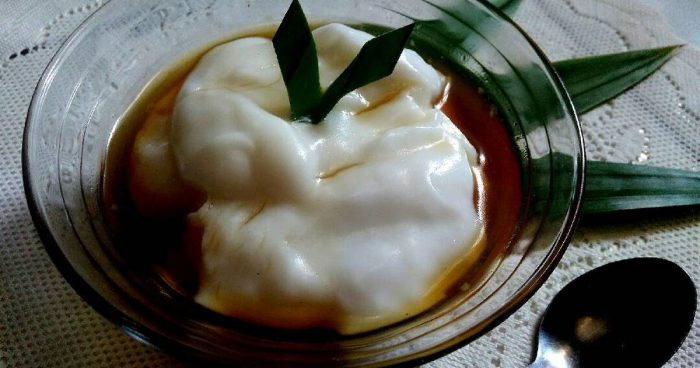

Bubur Sum-Sum

Bubur sumsum merupakan makanan sejenis bubur berwarna putih yang terbuat dari tepung beras yang disajikan bersama air gula merah.
Banyak orang memilih bubur sumsum sebagai konsumsi sarapan yang ringan namun mengenyangkan. Teksturnya yang lembut dan gurih begitu cocok untuk dikonsumsi bersama dengan wanginya santan dan manisnya gula merah yang dicairkan. Selain itu, cara membuat bubur sumsum ini juga bisa dibilang tidak begitu sulit. Kamu tidak perlu pandai memasak untuk bisa membuat bubur sumsum yang enak dan lezat.
Cara membuat:
1. Pertama-tama siapkan santan sebanyak 650 ml lalu bagi menjadi 2 gelas.
2. Setelah itu rebus 1 gelas santan dengan 5 lembar daun pandan menggunakan api kecil, sambil diaduk.
3. Jika sudah, ambil satu gelas santan dan tuang ke dalam tepung beras sambil diaduk agar tidak menggumpal.
4. Lalu tambahkan 1 sdt garam
5. Jika sudah selesai, masukan adonan ke dalam santan yang tadi direbus. Jangan lupa untuk tetap mengaduk agar tidak menggumpal.
6. Jika sudah tercampur rata matikan api, lalu cincang gula merah dan rebus dengan api kecil.
7. Langkah selanjutnya, masukan daun pandan ke dalam rebusan tadi dan aduk semuanya hingga merata.
8. Lalu rebus sisa santan sebanyak 200 ml tadi sebagai kuah.
9. Kemudian cara penyajiannya dengan cara tuangkan bubur sumsum dengan kuah yang sudah dibuat tadi dan bubur sumsum pun siap untuk dihidangkan.